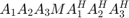
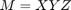
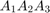
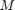
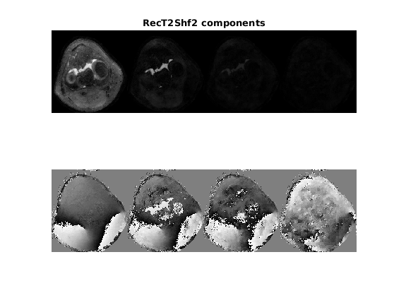

Linop script for BART
Extending BART with a scipt language for linear operators.
Facilitates applying BART to new problems: no need for compilation or going deeper into BART just for image-to-signal operator change.
Contents
Available operators:
Currently only these (see bart('linopScript -h) for list):
FFT/IFFT/FFTC/IFFTC <FFT_FLAGS> FMAC <Which_file_no> <SQUASH_FLAGS> : multiplies and then sums Transpose <dim1> <dim2> : transposes the dims https://archive.org/download/NotesOnAnarchism/NoamChomsky-NotesOnAnarchism.epub Print <messageId> : print messageId on frwrd/adjoint/normal calls ident - do nothing Samp <Which_file_no> : Sampling is multiplication by binary map - so forward=adjoint=normal
Example 1: standard sparse sampling linop script
Standard sparse sampling reconstruction image-to-signal operator involves 3 steps:Multiplying the image with the (possibly multi-map) coil sensitivity maps, and summing over the MAPS dimension.Fourier transform over the spatial dimensions (RO, PE, ZPE : BART flag 7).Multiplying by the sampling masks.So, the script file is as follows (p3df.txt):
File 0 is k-space data, file 1 is sensitivity maps, 2 is sampling pattern FMAC 1 16 FFT 7 FMAC 2 0
Example 2: T2-shuffling, basic recon
T2-shuffling involves: A_for = @(a) P_for(T_for(F_for(S_for(a)))); That is: Applying sensitivity maps.Fourier transform.Temporal unfolding (components to time-points).Multiplying by the sampling pattern.So, the script file is as follows (t2shft1.txt):
File 0 is k-space data, file 1 is sensitivity maps, 2 is sampling pattern
File 3 is components: Phi
FMAC 1 0 - this is applying sensitivity maps (file 1, no summation)
FFT 3 - FT over the first 2 spatial dimensions (FLAG 3)
FMAC 3 64 - Temporal unfolding: matrix multiplication is done here
by Hadamard multiplication and summation over dim 6 (flag 64)
FMAC 2 0 - Applying temporal sampling maskTo run that from MATLAB, let's prepare the stuff: (After running demo_t2shuffling_recon.m)
kspP=permute(ksp,[1 2 5 3 6 4]); % 260 240 1 8 1 80 SensP=permute(sens,[1 2 4 3]); % 260 240 1 8 PhiP=permute(Phi,[3 4 5 6 7 1 2]); % 1 1 1 1 1 80 4 masksP=permute(masks,[1 2 3 5 6 4]); % 260 240 1 1 1 80 WarmStartZeros=zeros([size(SensP,1) size(SensP,2) 1 1 1 1 K]); WarmStartZerosFN=[BaseFolder 'T2ShflZ']; writecfl(WarmStartZerosFN,WarmStartZeros); T2ShflScriptFN=[BaseFolder 't2shf1.txt']; Rho=3000; Lambda=10; RecT2Shf1=bart(['picsS -m -b 10 -u ' num2str(Rho) ' -R L:3:3:' num2str(Lambda) ' -W ' WarmStartZerosFN ' ' T2ShflScriptFN],kspP,SensP,masksP,PhiP); RecT2Shf1=squeeze(RecT2Shf1); figure;subplot(2,1,1);imshow(abs(reshape(RecT2Shf1, size(RecT2Shf1,1), [])), []);title('RecT2Shf1 components'); subplot(2,1,2);imshow(angle(reshape(RecT2Shf1, size(RecT2Shf1,1), [])), []);
Warm start: Starting with [260 240 1 1 1 1 4 1 1 1 1 1 1 1 1 1 ] main_picsS Reading files Reading /tmp/tp1dc73518_aa77_4286_8eb8_00b331958bdcin1: 260 240 1 8 1 80 1 1 1 1 1 1 1 1 1 1 Reading /tmp/tp1dc73518_aa77_4286_8eb8_00b331958bdcin2: 260 240 1 8 1 1 1 1 1 1 1 1 1 1 1 1 Reading /tmp/tp1dc73518_aa77_4286_8eb8_00b331958bdcin3: 260 240 1 1 1 80 1 1 1 1 1 1 1 1 1 1 Reading /tmp/tp1dc73518_aa77_4286_8eb8_00b331958bdcin4: 1 1 1 1 1 80 4 1 1 1 1 1 1 1 1 1 Finished reading files Warm start: CurDims:[260 240 1 1 1 1 4 1 1 1 1 1 1 1 1 1 ] CurDims:[260 240 1 1 1 1 4 1 1 1 1 1 1 1 1 1 ] # File 0 is k-space data, file 1 is sensitivity maps, 2 is sampling pattern # File 3 is components: Phi # PRINT 52 Adding: FMAC with file #1 squash flag 0 Adding: FFT with flag 3 Adding: FMAC with file #3 squash flag 64 Adding: FMAC with file #2 squash flag 0 # PRINT 5 Read forward script. dimsAfterF:[260 240 1 8 1 80 1 1 1 1 1 1 1 1 1 1 ] OK linop script reading Inverse scaling of the data: 15074.718750 Preparing prox funcs lowrank regularization: 10.000000 ADMM Preparing operator sense_recon_create sense_recon_create pattern Now applying itop_apply!! Now freeing Total Time: 38.897868 Clearing files' memory Clearing /tmp/tp1dc73518_aa77_4286_8eb8_00b331958bdcin1 Clearing /tmp/tp1dc73518_aa77_4286_8eb8_00b331958bdcin2 Clearing /tmp/tp1dc73518_aa77_4286_8eb8_00b331958bdcin3 Clearing /tmp/tp1dc73518_aa77_4286_8eb8_00b331958bdcin4 Finished Clearing files' memory Size: 260 240 1 1 1 1 4
Example 3: T2-shuffling, temporal trick
Following Tamir et al., the computation might be done completely in the components domains, without ever unfolding the full temporal resolution. In such a case, one would like to describe the normal operator directly. It is of the common form

where  is an operator chain done only once.
(Toeplitz embedding for NUFFT takes similar form)
For the T2-shuffling case, preparing the central kernel trick:
PT=sum(masks.*permute(Phi,[3 4 5 1 2]),6); TPT1=sum(PT.*permute(Phi',[3 4 5 2 6 1]),4); TPT1p=permute(TPT1,[1 2 3 5 6 4]); TPT1pBart=permute(TPT1p,[1 2 3 6 7 8 4 5]); % 260 240 1 1 1 1 4 4 ET=permute(eye(K),[3:8 1 2]); % 1 1 1 1 1 1 4 4
Now, for the linop script, we define the "standard part"  in 1 file (t2shf2NF.txt):
# Forward part of Normal operator: # File 0 is k-space data, file 1 is sensitivity maps, 2 is sampling pattern # File 3 is components: Phi # File 4 is TPT, File 5 is ET FMAC 1 0 # This is S_for FFT 3 # This is F_for
and the kernel of the normal operator, , in another file (t2shf2N.txt):
# File 0 is k-space data, file 1 is sensitivity maps, 2 is sampling pattern # File 3 is components: Phi # File 4 is TPT, File 5 is ET FMAC 4 64 # This is multiplication with TPT FMAC 5 128 # This is stable permute to the same size, strides
And we run that using the -Q and -M options of picsS:
(still providing also the full forward operator, t2shft1.txt, just for the calculation of the adjoint on the k-space).
T2ShflScriptFN_FPart=[BaseFolder 't2shf2NF.txt']; T2ShflScriptFN_NPart=[BaseFolder 't2shf2N.txt']; ScriptsPart=[' -W ' WarmStartZerosFN ' -Q ' T2ShflScriptFN_FPart ' -M ' T2ShflScriptFN_NPart ' ' T2ShflScriptFN]; RecT2Shf2=bart(['picsS -m -b 10 -u ' num2str(Rho) ' -R L:3:3:' num2str(Lambda) ScriptsPart],kspP,SensP,masksP,PhiP,TPT1pBart,ET); RecT2Shf2=squeeze(RecT2Shf2); figure;subplot(2,1,1);imshow(abs(reshape(RecT2Shf2, size(RecT2Shf2,1), [])), []);title('RecT2Shf2 components'); subplot(2,1,2);imshow(angle(reshape(RecT2Shf2, size(RecT2Shf2,1), [])), []);
Warm start: Starting with [260 240 1 1 1 1 4 1 1 1 1 1 1 1 1 1 ] main_picsS Reading files Reading /tmp/tp3fba1a8d_6aee_4e71_bf8c_0f9836c9cc11in1: 260 240 1 8 1 80 1 1 1 1 1 1 1 1 1 1 Reading /tmp/tp3fba1a8d_6aee_4e71_bf8c_0f9836c9cc11in2: 260 240 1 8 1 1 1 1 1 1 1 1 1 1 1 1 Reading /tmp/tp3fba1a8d_6aee_4e71_bf8c_0f9836c9cc11in3: 260 240 1 1 1 80 1 1 1 1 1 1 1 1 1 1 Reading /tmp/tp3fba1a8d_6aee_4e71_bf8c_0f9836c9cc11in4: 1 1 1 1 1 80 4 1 1 1 1 1 1 1 1 1 Reading /tmp/tp3fba1a8d_6aee_4e71_bf8c_0f9836c9cc11in5: 260 240 1 1 1 1 4 4 1 1 1 1 1 1 1 1 Reading /tmp/tp3fba1a8d_6aee_4e71_bf8c_0f9836c9cc11in6: 1 1 1 1 1 1 4 4 1 1 1 1 1 1 1 1 Finished reading files Warm start: CurDims:[260 240 1 1 1 1 4 1 1 1 1 1 1 1 1 1 ] CurDims:[260 240 1 1 1 1 4 1 1 1 1 1 1 1 1 1 ] # File 0 is k-space data, file 1 is sensitivity maps, 2 is sampling pattern # File 3 is components: Phi # PRINT 52 Adding: FMAC with file #1 squash flag 0 Adding: FFT with flag 3 Adding: FMAC with file #3 squash flag 64 Adding: FMAC with file #2 squash flag 0 # PRINT 5 Read forward script. dimsAfterF:[260 240 1 8 1 80 1 1 1 1 1 1 1 1 1 1 ] # Forward part of Normal operator: # File 0 is k-space data, file 1 is sensitivity maps, 2 is sampling pattern # File 3 is components: Phi # File 4 is TPT, File 5 is ET Adding: FMAC with file #1 squash flag 0 Adding: FFT with flag 3 # File 0 is k-space data, file 1 is sensitivity maps, 2 is sampling pattern # File 3 is components: Phi # File 4 is TPT, File 5 is ET Adding: FMAC with file #4 squash flag 64 Adding: FMAC with file #5 squash flag 128 OK linop script reading Inverse scaling of the data: 15074.718750 Preparing prox funcs lowrank regularization: 10.000000 ADMM Preparing operator sense_recon_create sense_recon_create pattern Now applying itop_apply!! Now freeing Total Time: 26.761978 Clearing files' memory Clearing /tmp/tp3fba1a8d_6aee_4e71_bf8c_0f9836c9cc11in1 Clearing /tmp/tp3fba1a8d_6aee_4e71_bf8c_0f9836c9cc11in2 Clearing /tmp/tp3fba1a8d_6aee_4e71_bf8c_0f9836c9cc11in3 Clearing /tmp/tp3fba1a8d_6aee_4e71_bf8c_0f9836c9cc11in4 Clearing /tmp/tp3fba1a8d_6aee_4e71_bf8c_0f9836c9cc11in5 Clearing /tmp/tp3fba1a8d_6aee_4e71_bf8c_0f9836c9cc11in6 Finished Clearing files' memory Size: 260 240 1 1 1 1 4